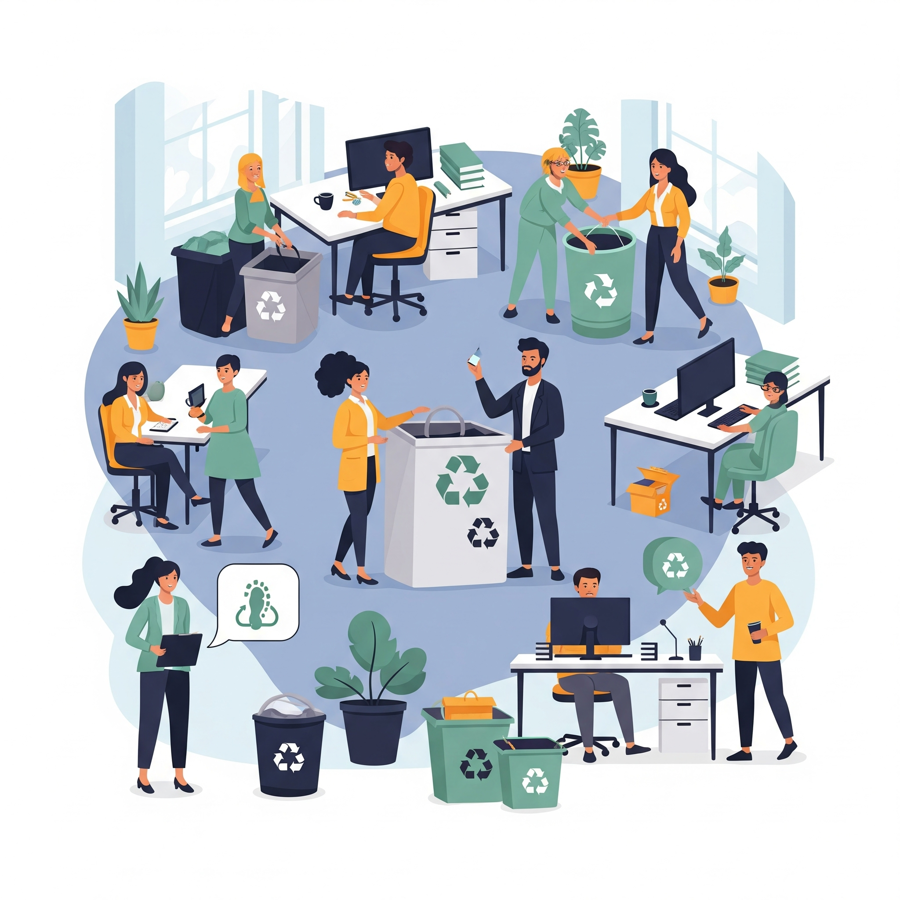

5.1. Políticas de sostenibilidad en empresas tecnológicas
Las políticas de sostenibilidad en las empresas tecnológicas reflejan el compromiso de estas organizaciones con el desarrollo responsable, considerando su impacto ambiental, social y económico. Estas políticas se integran en la estrategia corporativa y se materializan a través de acciones y objetivos medibles. Algunas de las principales líneas de actuación incluyen:
- Reducción de huella de carbono: Planes para disminuir las emisiones de gases de efecto invernadero mediante el uso de energías renovables, mejoras en eficiencia energética y compensación de emisiones.
- Gestión sostenible de recursos: Uso racional del agua, materiales reciclados, eliminación de sustancias tóxicas y reducción del consumo energético en procesos y productos.
- Ética en la cadena de suministro: Auditorías a proveedores para asegurar condiciones laborales justas, respeto a los derechos humanos y uso de materiales conflict-free.
- Diseño sostenible de productos: Aplicación de principios de ecodiseño y fomento de productos modulares, reciclables y duraderos.
- Transparencia y gobernanza: Publicación de informes de sostenibilidad (GRI, SASB) y cumplimiento de normativas internacionales como el Pacto Mundial de la ONU o los ODS.
Empresas como Google, Microsoft y HP ya han implementado políticas de sostenibilidad ambiciosas, posicionándose como líderes en la transición hacia una industria tecnológica más responsable.
